The sentence
The sentence, for reference, with Harvest's track drawn on the spectrogram.
vc1_the_sentence.flac, 2.5 s, mono
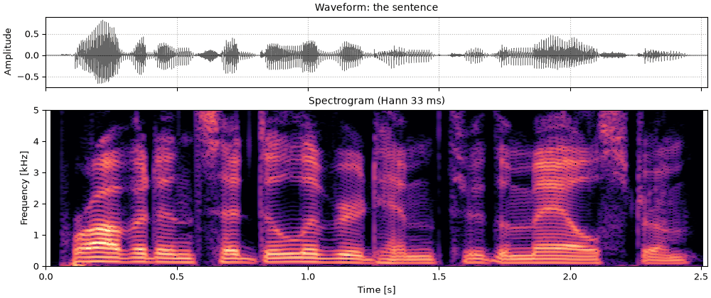
Code
sound = sentence
fig, playhead = show(sound, "the sentence", harvest)A vocoder such as WORLD (Morise, Yokomori & Ozawa, 2016) takes a voice apart into a pitch track, a smooth spectral envelope and an aperiodicity (see Source, filter and aperiodicity), and puts it back together from them. Each can be changed before it is put back. Two changes are basic:
so.scale_f0(track, ratio), which moves the harmonics and leaves the envelope alone;so.warp_frequency(envelope, ratio), which reads the envelope at f / \text{ratio}, so a peak at 1000 Hz moves to 1000 \times \text{ratio} Hz, and leaves the pitch alone.Both work on any F0 contour and any envelope, so the pitch can come from one analysis and the envelope from another. The page measures what each change did; it does not say how the results sound.
Press play and a line follows the sound across every time axis in its plots. Click any time axis to play from that point. Start with your volume low.
The sentence from Seeing speech, read by a male talker (CMU ARCTIC, speaker bdl),
with the F0 track WORLD's Harvest (Morise, 2017) measured, stored with it. CheapTrick's envelope
and D4C's aperiodicity are measured on that track. so.world_synthesize puts them back together,
sample for sample as WORLD does.
Each change below is checked by measurement on the output. The pitch: so.f0_track on the
output, its median over voiced time windows against the same on the original. The formants:
CheapTrick's envelope of the output, averaged in dB over voiced time windows, against the
original's average read at f / r for a range of ratios r. The ratio whose curve fits best
over 100 to 5000 Hz, with the overall level left free, is the fitted warp.
import matplotlib.pyplot as plt
import numpy as np
import sonore as so
plt.rcParams.update({"font.size": 9, "axes.titlesize": 10, "figure.dpi": 100})
def finish(snd):
"""How every sound in the gallery is played: 5 ms ramps, RMS 0.1, peak at most 0.95."""
snd = snd.ramp(5e-3).normalize(rms=0.1)
return snd.normalize(peak=0.95) if snd.peak > 0.95 else snd
def show(snd, title, contour=None, fmax=5000):
"""Waveform and narrowband spectrogram (Hann 33 ms, harmonics resolved), on one time axis,
with an F0 contour drawn over the spectrogram if one is given."""
fig = plt.figure(figsize=(10, 4.2), layout="constrained")
ax0, ax1 = fig.subplots(2, 1, sharex=True, height_ratios=[0.45, 1])
snd.plot(ax0, color="k", lw=0.4)
ax0.set(title=f"Waveform: {title}", xlabel="")
so.STFT(snd, win_dur=0.0333, hop_dur=0.002).plot(ax1, db_range=70, colorbar=False, fmax=fmax)
ax1.set_title("Spectrogram (Hann 33 ms)")
if contour is not None:
times, values = contour
ax1.plot(times, np.where(values > 0, values, np.nan), color="c", lw=1.2)
for ax in (ax0, ax1):
ax.set_xlim(0, snd.duration)
return fig, [ax0, ax1]
sentence = finish(so.load("docs/speech/bdl_arctic_a0131.flac"))
fs = sentence.fs
harvest_times, harvest_f0 = np.loadtxt("docs/speech/bdl_arctic_a0131_f0.csv", delimiter=",", skiprows=2).T
harvest = (harvest_times, harvest_f0)
envelope = so.cheaptrick(sentence, harvest)
aperiodicity = so.d4c(sentence, harvest)
voiced = harvest_f0 > 0
scored = (envelope.f >= 100) & (envelope.f <= 5000)
def median_f0(snd):
"""The median F0 that so.f0_track measures over the voiced time windows of a sound."""
track = so.f0_track(snd)
return np.median(track.f0[0][track.voiced[0]])
def mean_voiced_db(view, times, is_voiced):
"""An envelope averaged in dB over the voiced time windows, on CheapTrick's frequencies."""
return np.mean(10 * np.log10(view(times[is_voiced], envelope.f)[0]), axis=1)
def misfit(changed_db, reference_db, ratio, slope=False):
"""How far changed_db is from reference_db read at f / ratio (RMS dB, 100-5000 Hz), with
the level left free and, if slope is True, a straight line in dB over log frequency too."""
difference = changed_db[scored] - np.interp(envelope.f[scored] / ratio, envelope.f, reference_db)
columns = [np.ones(scored.sum())] + ([np.log2(envelope.f[scored])] if slope else [])
fit = np.linalg.lstsq(np.column_stack(columns), difference, rcond=None)[0]
return np.sqrt(np.mean((difference - np.column_stack(columns) @ fit) ** 2))
RATIOS = np.arange(0.70, 2.001, 0.005)
def fitted_warp(changed_db, reference_db, slope=False):
"""The ratio r for which changed_db best matches reference_db read at f / r."""
misfits = [misfit(changed_db, reference_db, ratio, slope) for ratio in RATIOS]
return RATIOS[np.argmin(misfits)], np.min(misfits)
original_f0 = median_f0(sentence)
original_db = mean_voiced_db(envelope, harvest_times, voiced)
def report(snd, track):
"""Print the measured pitch ratio and fitted warp of a changed sentence; track is its F0
contour."""
changed_db = mean_voiced_db(so.cheaptrick(snd, track), harvest_times, voiced)
warp = fitted_warp(changed_db, original_db)[0]
print(f"pitch ratio {median_f0(snd) / original_f0:.3f}, fitted warp {warp:.3f}")
print(f"median voiced F0 of the sentence: {original_f0:.0f} Hz")median voiced F0 of the sentence: 119 Hz
The pitch up by half (a ratio of 1.5, a musical fifth), the formants up by a fifth of their frequency (1.2), and both. The sentence first, and WORLD's resynthesis with nothing changed, which is what every change below is a change of.
The sentence, for reference, with Harvest's track drawn on the spectrogram.
vc1_the_sentence.flac, 2.5 s, mono

sound = sentence
fig, playhead = show(sound, "the sentence", harvest)WORLD's resynthesis with nothing changed: Harvest's track, CheapTrick's envelope and D4C's aperiodicity put back together.
vc2_resynthesis_nothing_changed.flac, 2.5 s, mono
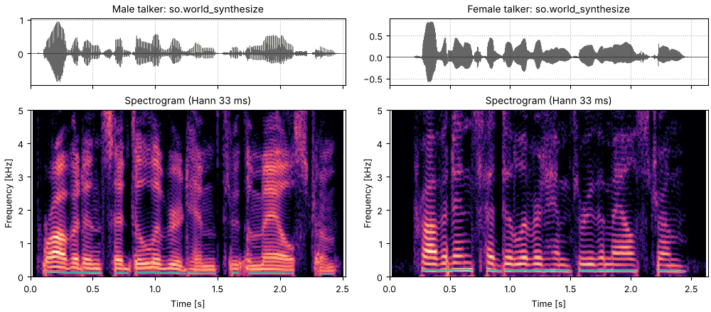
sound = finish(so.world_synthesize(harvest, envelope, aperiodicity))
fig, playhead = show(sound, "so.world_synthesize, nothing changed", harvest)
report(sound, harvest)The pitch times 1.5, the envelope as it was. The harmonics are half as far apart again; the dark bands of the formants stay at the same frequencies.
vc3_higher_pitch.flac, 2.5 s, mono
higher = so.scale_f0(harvest, 1.5)
sound = finish(so.world_synthesize(higher, envelope, aperiodicity))
fig, playhead = show(sound, "F0 × 1.5, formants kept", higher)
report(sound, higher)The formants times 1.2, the pitch as it was. The harmonics are where they were; the formants sit a fifth higher in frequency.
vc4_higher_formants.flac, 2.5 s, mono
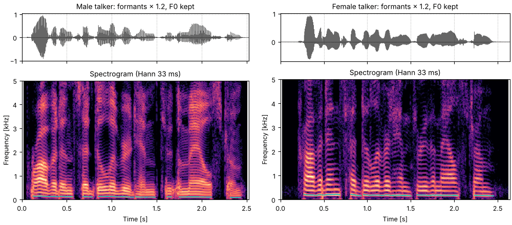
sound = finish(so.world_synthesize(harvest, so.warp_frequency(envelope, 1.2), aperiodicity))
fig, playhead = show(sound, "formants × 1.2, F0 kept", harvest)
report(sound, harvest)Both: the pitch times 1.5 and the formants times 1.2.
vc5_higher_pitch_and_formants.flac, 2.5 s, mono
sound = finish(so.world_synthesize(higher, so.warp_frequency(envelope, 1.2), aperiodicity))
fig, playhead = show(sound, "F0 × 1.5, formants × 1.2", higher)
report(sound, higher)Each change shows up in its own measurement and not in the other's. What the warp does to one time window's envelope, drawn on a linear frequency axis where a ratio stretches it from 0 Hz: every feature moves up by the same proportion, so the higher formants move further in hertz.
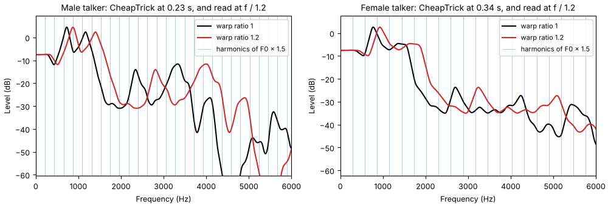
window = np.argmax(envelope.data[0].sum(axis=0) * voiced) # the strongest voiced time window
fig, ax = plt.subplots(figsize=(10, 3.2), layout="constrained")
for ratio, color in [(1.0, "k"), (1.2, "C3")]:
view = so.warp_frequency(envelope, ratio)
level = 10 * np.log10(view(harvest_times[window : window + 1], envelope.f)[0, :, 0])
ax.plot(envelope.f, level, color=color, label=f"warp ratio {ratio:g}")
harmonics = 1.5 * harvest_f0[window] * np.arange(1, 40)
ax.vlines(harmonics, -100, 100, color="C0", lw=0.5, alpha=0.5, label="harmonics of F0 × 1.5")
top = 10 * np.log10(envelope.data[0, :, window].max()) + 5
ax.set(xlabel="Frequency (Hz)", ylabel="Level (dB)", xlim=(0, 6000), ylim=(top - 70, top))
ax.set_title(f"CheapTrick's envelope at {harvest_times[window]:.2f} s, and the same read at f / 1.2")
ax.legend(loc="upper right", fontsize=8)The Phase vocoder page changes pitch the classic way: stretch the sound in time, then resample it back to its length. Resampling scales every frequency in the sound, so the envelope moves with the harmonics, as the measurement shows.
The sentence a fifth higher by so.pitch_shift: time stretch and resampling.
vc7_phase_vocoder_a_fifth_up.flac, 2.5 s, mono
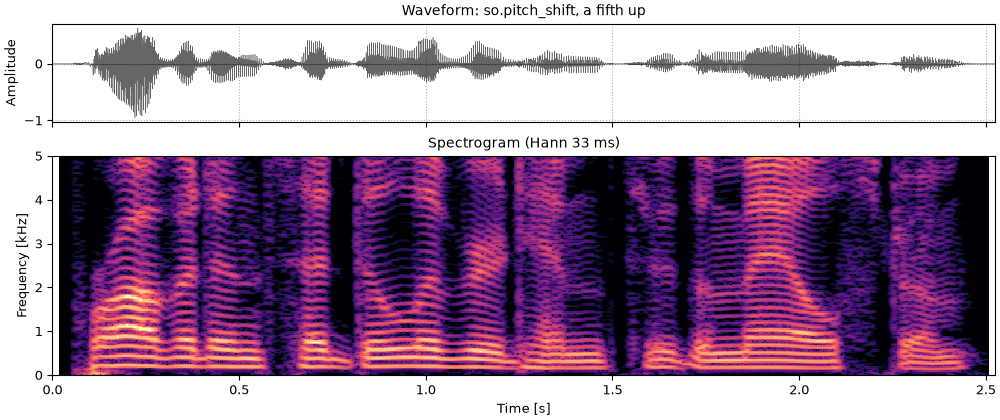
sound = finish(so.pitch_shift(sentence, 12 * np.log2(1.5)))
fig, playhead = show(sound, "so.pitch_shift, a fifth up")
report(sound, higher)so.scale_f0 has a second argument, range, that spreads the contour around its median on a
log scale: \text{median} \times \text{ratio} \times (F_0 / \text{median})^{\text{range}}. A range
of 0 is a monotone at the median, and 2 doubles every interval from it. The formants and the
aperiodicity are left as they were.
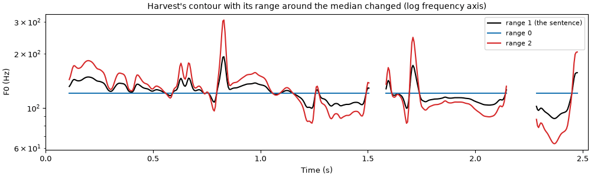
contours = {"range 1 (the sentence)": harvest}
contours["range 0"] = so.scale_f0(harvest, 1.0, range=0.0)
contours["range 2"] = so.scale_f0(harvest, 1.0, range=2.0)
fig, ax = plt.subplots(figsize=(10, 3.0), layout="constrained")
for (label, (times, values)), color in zip(contours.items(), ["k", "C0", "C3"], strict=True):
ax.plot(times, np.where(values > 0, values, np.nan), color=color, label=label)
ax.set(xlabel="Time (s)", ylabel="F0 (Hz)", xlim=(0, sentence.duration))
ax.set_yscale("log")
ax.set_title("Harvest's contour with its range around the median changed (log frequency axis)")
ax.legend(loc="upper right", fontsize=8)A monotone: every voiced time window at the median F0.
vc9_monotone.flac, 2.5 s, mono
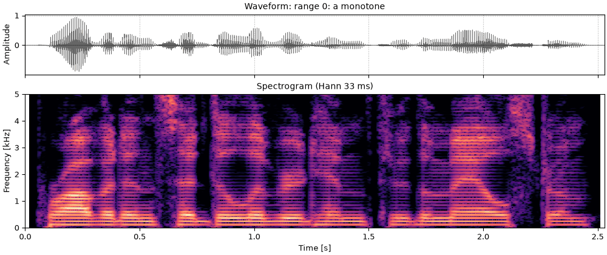
sound = finish(so.world_synthesize(contours["range 0"], envelope, aperiodicity))
fig, playhead = show(sound, "range 0: a monotone", contours["range 0"])The range doubled: every rise and fall around the median twice as large, in musical intervals.
vc10_twice_the_range.flac, 2.5 s, mono
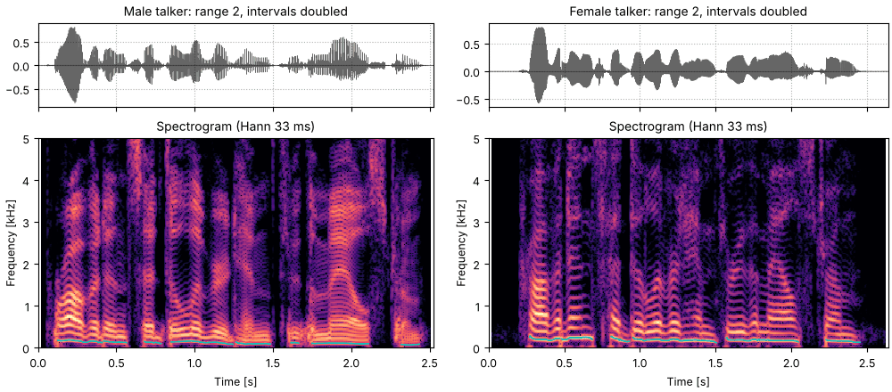
sound = finish(so.world_synthesize(contours["range 2"], envelope, aperiodicity))
fig, playhead = show(sound, "range 2: every interval from the median doubled", contours["range 2"])The aperiodicity says, frequency by frequency, how much of the voice is noise. When the
formants move, it can stay where it is or move with them, and so.warp_frequency warps it the
same way as an envelope. Which is right depends on where the noise comes from. Noise made at
the source (breath at the glottis) passes through the formants like the harmonics do, so its
share at each frequency belongs to the source and should stay. A share that follows the
formants should move with them. Both are on offer; so.warp_frequency(aperiodicity, ratio) is
the second.
D4C's aperiodicity of this sentence has one bend, at 3 kHz (see What WORLD reports), and a warp by 1.2 moves the bend to 3.6 kHz. Averaged in dB over voiced time windows, kept and warped:
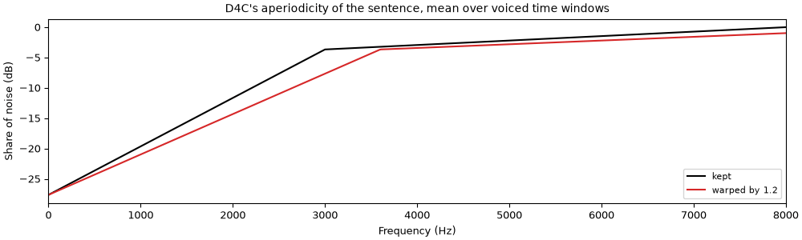
kept_db = mean_voiced_db(aperiodicity, harvest_times, voiced)
warped_aperiodicity = so.warp_frequency(aperiodicity, 1.2)
warped_db = mean_voiced_db(warped_aperiodicity, harvest_times, voiced)
fig, ax = plt.subplots(figsize=(10, 3.0), layout="constrained")
ax.plot(envelope.f, kept_db, color="k", label="kept")
ax.plot(envelope.f, warped_db, color="C3", label="warped by 1.2")
ax.set(xlabel="Frequency (Hz)", ylabel="Share of noise (dB)", xlim=(0, 8000))
ax.set_title("D4C's aperiodicity of the sentence, mean over voiced time windows")
ax.legend(loc="lower right", fontsize=8)
largest = np.max(np.abs(warped_db - kept_db)[envelope.f <= 5000])
print(f"largest difference below 5 kHz: {largest:.1f} dB")The formants times 1.2 with the aperiodicity warped too. The other formant changes on this page keep it.
vc12_higher_formants_aperiodicity_warped.flac, 2.5 s, mono
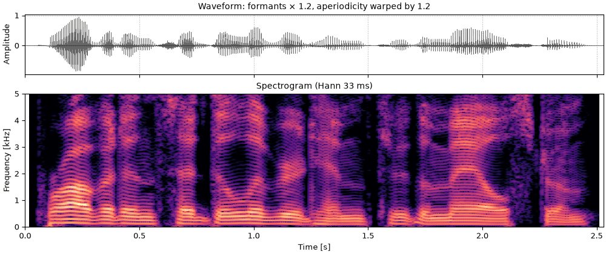
sound = finish(so.world_synthesize(harvest, so.warp_frequency(envelope, 1.2), warped_aperiodicity))
fig, playhead = show(sound, "formants × 1.2, aperiodicity warped by 1.2", harvest)The same sentence read by a female talker (speaker slt). Female voices are higher, and female vocal tracts are on average shorter, so their formants are higher. Hillenbrand et al. (1995) measured F1 to F3 of American English vowels of male and female talkers; for the vowels of "heed", "hod" and "who'd", the female formants are 1.11 to 1.28 times the male ones, a geometric mean of 1.174. The pitch ratio is measured on the two recordings.
female = finish(so.load("docs/speech/slt_arctic_a0131.flac"))
female_track = so.f0_track(female)
pitch_ratio = median_f0(female) / original_f0
print(f"median voiced F0: {original_f0:.0f} Hz (bdl), {median_f0(female):.0f} Hz (slt)")
print(f"pitch ratio: {pitch_ratio:.2f}")median voiced F0: 119 Hz (bdl), 183 Hz (slt) pitch ratio: 1.53
The female talker's sentence, for reference, with so.f0_track's contour.
vc13_female_talker.flac, 2.6 s, mono
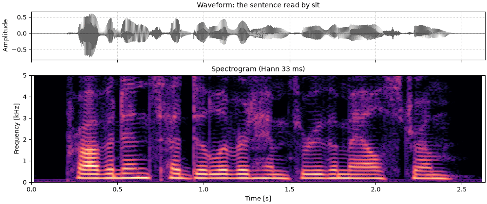
sound = female
fig, playhead = show(sound, "the sentence read by slt", (female_track.t, female_track.f0[0]))The male talker's sentence at the female median pitch, the formants as they were.
vc14_male_talker_female_pitch.flac, 2.5 s, mono
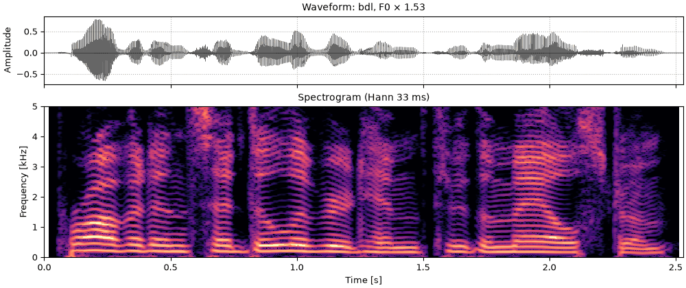
toward = so.scale_f0(harvest, pitch_ratio)
sound = finish(so.world_synthesize(toward, envelope, aperiodicity))
fig, playhead = show(sound, f"bdl, F0 × {pitch_ratio:.2f}", toward)The male talker's sentence at the female median pitch, with the formants times 1.174, Hillenbrand et al.'s ratio.
vc15_male_talker_female_pitch_and_formant_ratio.flac, 2.5 s, mono
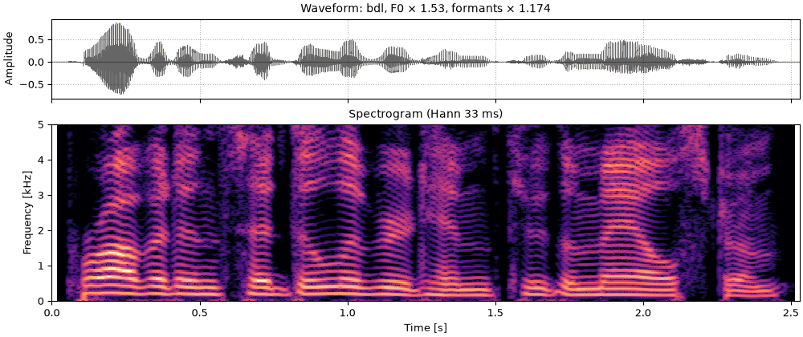
sound = finish(so.world_synthesize(toward, so.warp_frequency(envelope, 1.174), aperiodicity))
fig, playhead = show(sound, f"bdl, F0 × {pitch_ratio:.2f}, formants × 1.174", toward)One ratio does not turn one talker's average envelope into another's. Fitting the ratio that takes the male average voiced envelope closest to the female one gives a much larger number than the formant studies do. The two envelopes also differ in slope, which no warp can change; letting a straight line in dB over log frequency absorb the slope brings the ratio back near Hillenbrand et al.'s.
female_db = mean_voiced_db(so.cheaptrick(female, female_track), female_track.t, female_track.voiced[0])
for label, slope in [("level free", False), ("level and slope free", True)]:
ratio, residual = fitted_warp(female_db, original_db, slope=slope)
print(f"fitted warp, {label}: {ratio:.3f} (residual {residual:.2f} dB)")
print(f"residual at 1.174, level free: {misfit(female_db, original_db, 1.174):.2f} dB")fitted warp, level free: 1.665 (residual 4.55 dB) fitted warp, level and slope free: 1.205 (residual 2.81 dB) residual at 1.174, level free: 5.20 dB
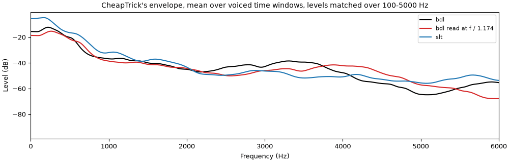
fig, ax = plt.subplots(figsize=(10, 3.2), layout="constrained")
for curve, color, label in [
(original_db, "k", "bdl"),
(np.interp(envelope.f / 1.174, envelope.f, original_db), "C3", "bdl read at f / 1.174"),
(female_db, "C0", "slt"),
]:
shift = np.mean(curve[scored] - original_db[scored]) # the same mean level over 100-5000 Hz
ax.plot(envelope.f, curve - shift, color=color, label=label)
ax.set(xlabel="Frequency (Hz)", ylabel="Level (dB)", xlim=(0, 6000))
ax.set_title("CheapTrick's envelope, mean over voiced time windows, levels matched over 100-5000 Hz")
ax.legend(loc="upper right", fontsize=8)so.world_synthesize takes its own envelope as it is and reads any other envelope at its
time windows and frequencies, so the pitch can come from one analysis and the envelope from
another. Three pitch tracks, those of the Cepstral analysis page: Harvest,
so.f0_track, and the cepstral peak in each 40 ms window. Four envelopes: CheapTrick's, the
cepstrum liftered at half the median period, and the envelope kept by 13 MFCCs (26 mel bands,
Davis & Mermelstein, 1980) with each band's triangle of height 1 (the default) or of area 1.
Triangles of height 1 sum more power the wider they are, so that envelope rises with frequency;
area 1 removes most of the rise.
A recording has no true envelope to score against, so the score is a distance between the
original's and the resynthesis's 40-band log mel spectrograms: the RMS of their difference in
dB per time window with the level removed, median over voiced time windows. It smooths the way
the MFCC envelope does, so it favors that envelope; read it as a check, not a ranking.
tools/compare_voice_methods.py also scores synthetic vowels against their true envelopes.
cepstral_times, cepstral_f0, _ = so.Cepstrum(so.STFT(sentence, win_dur=0.040, hop_dur=0.005)).f0(
f_lo=75, f_hi=400
)
f0_track = so.f0_track(sentence)
pitch_tracks = {
"Harvest": harvest,
"so.f0_track": f0_track,
"cepstral": (cepstral_times, cepstral_f0[0]),
}
half_period = 0.5 / original_f0
envelopes = {
"CheapTrick": envelope,
"cepstral": so.Cepstrum(so.STFT(sentence, win_dur=0.040, hop_dur=0.005))
.lifter(half_period)
.envelope_view(),
"MFCC": so.MFCC(sentence).envelope_view(),
"MFCC, area": so.MFCC(sentence, triangles="area").envelope_view(),
}
def log_mel(snd):
"""The 40-band log mel spectrogram (25 ms Hamming, 10 ms hop) used for the score."""
return so.MFCC(snd, n_mels=40).mel_db[0]
original_mel = log_mel(sentence)
mel_times = so.MFCC(sentence).t
mel_voiced = np.interp(mel_times, harvest_times, voiced.astype(float)) > 0.5
def distance(snd):
"""Level-free RMS dB between the log mel spectrograms, median over voiced time windows."""
resynthesized = log_mel(snd)
count = min(original_mel.shape[1], resynthesized.shape[1])
difference = (resynthesized[:, :count] - original_mel[:, :count])[:, mel_voiced[:count]]
return np.median(np.sqrt(np.mean((difference - difference.mean(axis=0)) ** 2, axis=0)))
# D4C needs a track on time windows that start at 0 s, which the cepstral track's do not, so
# the cepstral pitch is resynthesized with the aperiodicity D4C measures on so.f0_track's.
aperiodicities = {"Harvest": aperiodicity, "so.f0_track": so.d4c(sentence, f0_track)}
aperiodicities["cepstral"] = aperiodicities["so.f0_track"]
print(f"{'pitch from':<14}" + "".join(f"{name:>13}" for name in envelopes))
for track_name, track in pitch_tracks.items():
track_aperiodicity = aperiodicities[track_name]
scores = [distance(so.world_synthesize(track, view, track_aperiodicity)) for view in envelopes.values()]
print(f"{track_name:<14}" + "".join(f"{score:>10.2f} dB" for score in scores))pitch from CheapTrick cepstral MFCC MFCC, area Harvest 1.83 dB 3.05 dB 4.62 dB 3.16 dB so.f0_track 2.03 dB 3.20 dB 4.79 dB 3.39 dB cepstral 2.19 dB 3.37 dB 4.95 dB 3.43 dB
The cepstral track's time windows start before 0 s, so it cannot drive D4C, whose time windows
must start at 0 s. so.world_synthesize reads it onto the aperiodicity's time windows, so it
can drive the synthesis.
The pitch from the cepstrum and the envelope from the MFCCs (area 1); the only WORLD analysis is D4C's aperiodicity.
vc17_cepstral_pitch_mfcc_envelope.flac, 2.5 s, mono
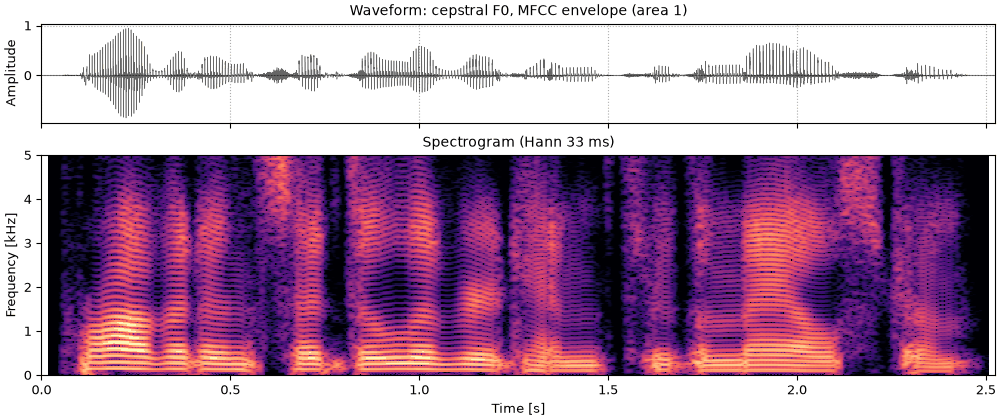
sound = finish(
so.world_synthesize(pitch_tracks["cepstral"], envelopes["MFCC, area"], aperiodicities["cepstral"])
)
fig, playhead = show(sound, "cepstral F0, MFCC envelope (area 1)", pitch_tracks["cepstral"])The same mixture with both changes: the cepstral pitch times 1.5 and the MFCC envelope times 1.2.
vc18_cepstral_pitch_and_mfcc_envelope_both_changed.flac, 2.5 s, mono
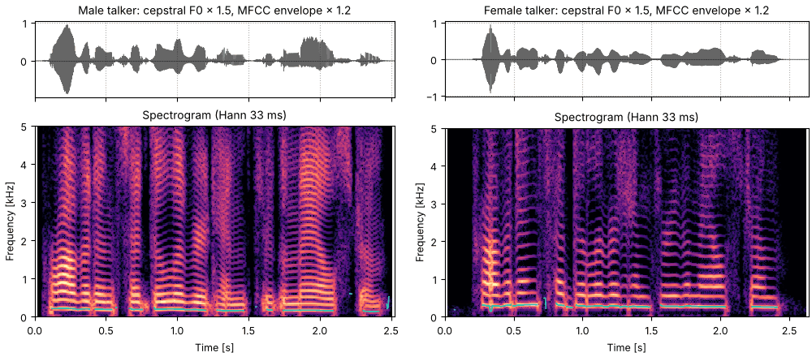
changed_track = so.scale_f0(pitch_tracks["cepstral"], 1.5)
changed_envelope = so.warp_frequency(envelopes["MFCC, area"], 1.2)
sound = finish(so.world_synthesize(changed_track, changed_envelope, aperiodicities["cepstral"]))
fig, playhead = show(sound, "cepstral F0 × 1.5, MFCC envelope (area 1) × 1.2", changed_track)
report(sound, so.scale_f0(f0_track, 1.5))The same envelopes also go to so.harmonic_complex as amplitudes, which reads them at each
harmonic's frequency and time exactly, with no noise; the
Voices from harmonics page builds a voice that way. WORLD's synthesis turns
each envelope into a short pulse on its own FFT (1024 points at 16 kHz), which suits a smooth
envelope like CheapTrick's; an envelope with deep, narrow valleys comes out a few dB off at the
harmonics there, and so.harmonic_complex is the better route for it.
so.warp_frequency also takes a ratio that changes over time, or any map from output frequency to source frequency, but this page uses one ratio throughout.mfcc.MFCCspectral_envelope.cheaptrickaperiodicity.d4cworld.world_synthesizecepstrum.Cepstrum.f0